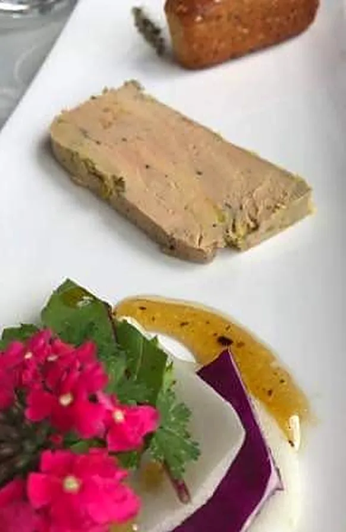
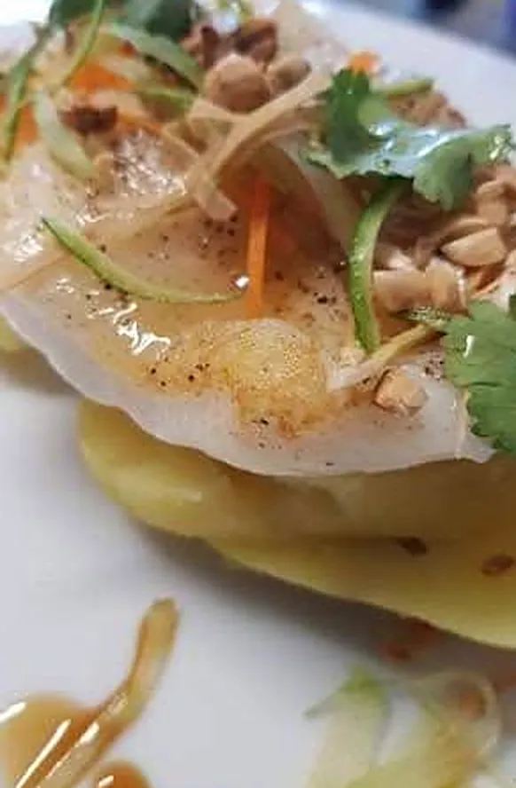
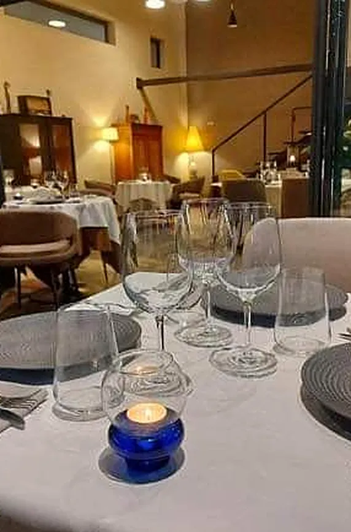
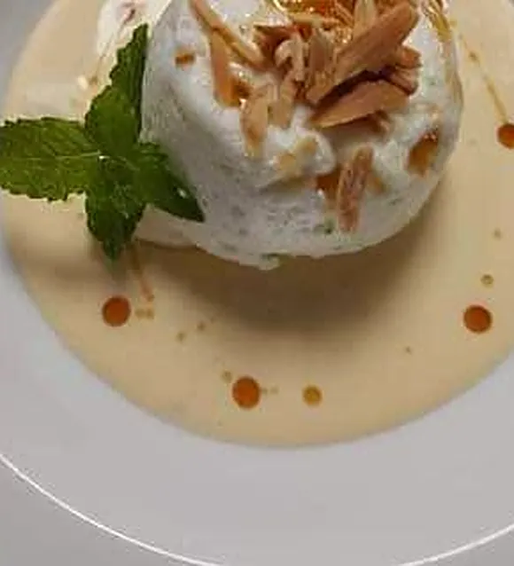
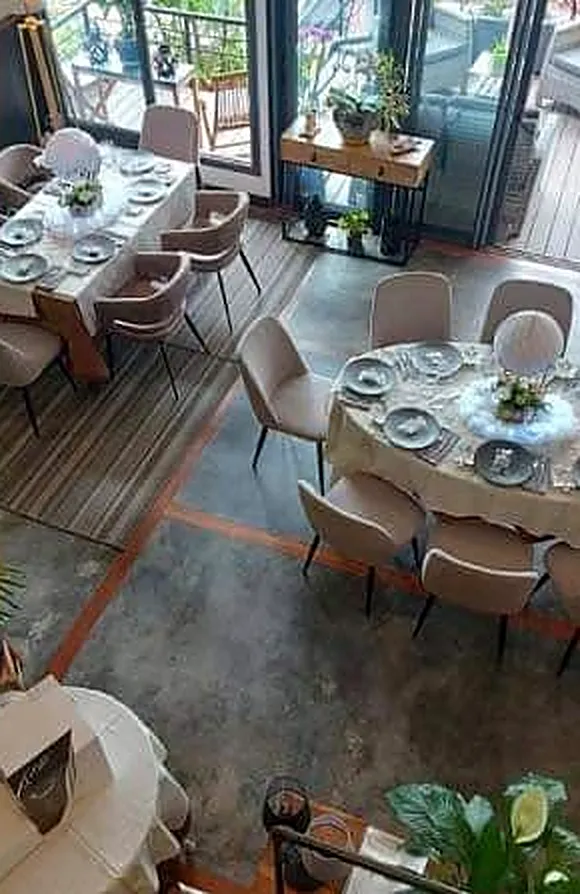
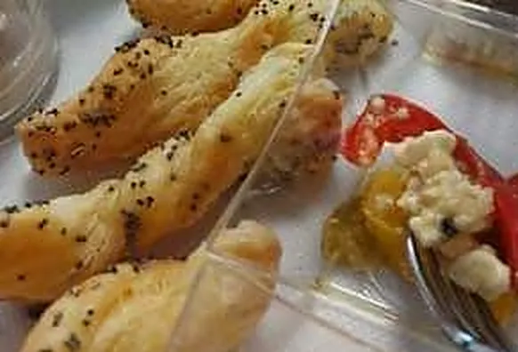
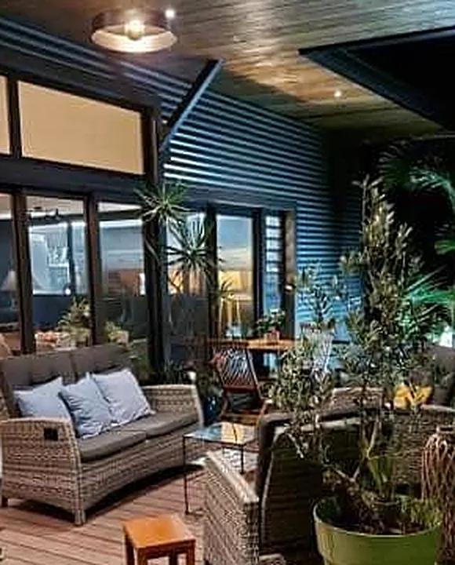
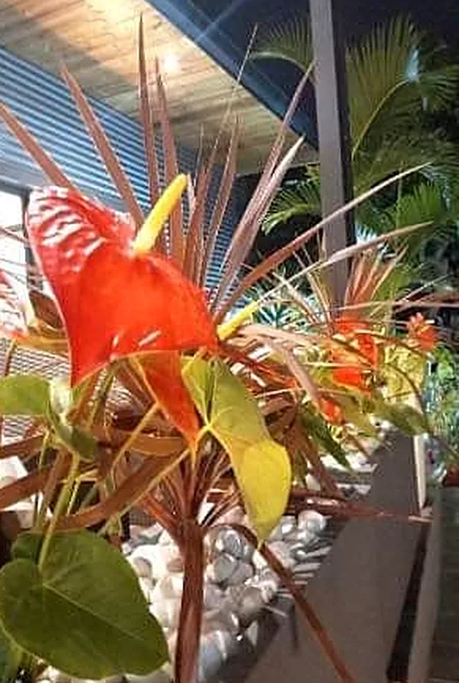
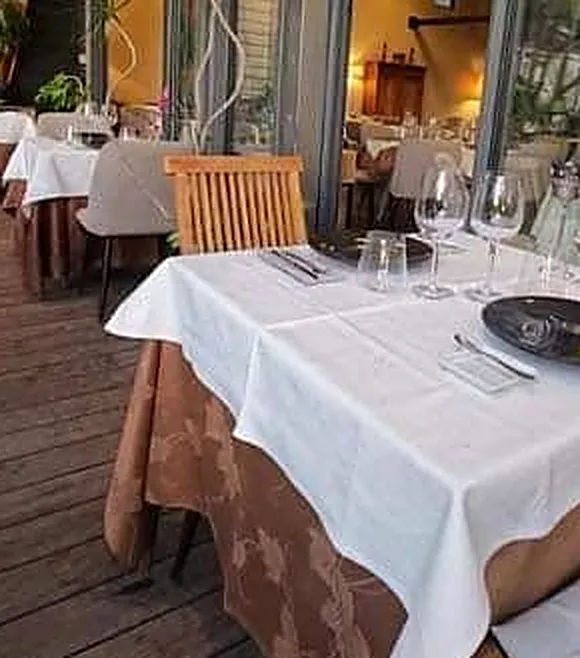

Une cuisine faite maison, créée sur place
Au Saint Hilaire, le menu change tous les mois. Le Chef Didier Técher compose une partition courte et soignée : canapés et mise en bouche pour commencer, deux entrées, deux plats et deux desserts au choix, puis un sorbet maison et des mignardises pour le mot de la fin.
« Tous nos plats sont faits maison, créés et élaborés sur place par le Chef Didier Técher à partir de produits bruts. »
Les produits de l'île s'invitent à la carte au fil des saisons : papaye confite, camarons, palmiste frais, ti-jacques, vanille Bleu de Saint-Philippe, mangue…


Assiettes, salle & terrasse
Faites glisser pour découvrir →







Une terrasse dans la verdure
Une salle chaleureuse avec sa mezzanine, une terrasse en bois entourée de plantes, des lanternes tressées et des nappes blanches : le décor parfait pour un dîner en famille, entre amis ou à deux.
- Vendredi & samedi : le soir, à partir de 19h30
- Dimanche : le midi
- Sur réservation au 0692 688 610
Un repas gastronomique en cadeau
Le Saint Hilaire propose des bons cadeaux : un repas gastronomique au cœur de l'Entre-Deux, à offrir à celles et ceux qu'on aime. Un cadeau qui se savoure, sous les lumières de la terrasse.
Un message suffit pour demander le vôtre.
au cœur de l'Entre-Deux
À très vite au Saint Hilaire
Nous trouver
12 B chemin Maurice Berrichon
97414 Entre-Deux, La Réunion
Vendredi & samedi soir dès 19h30 · dimanche midi · sur réservation